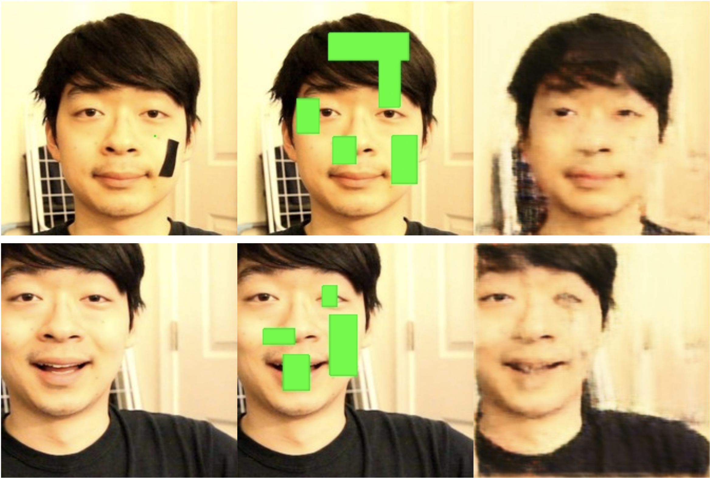
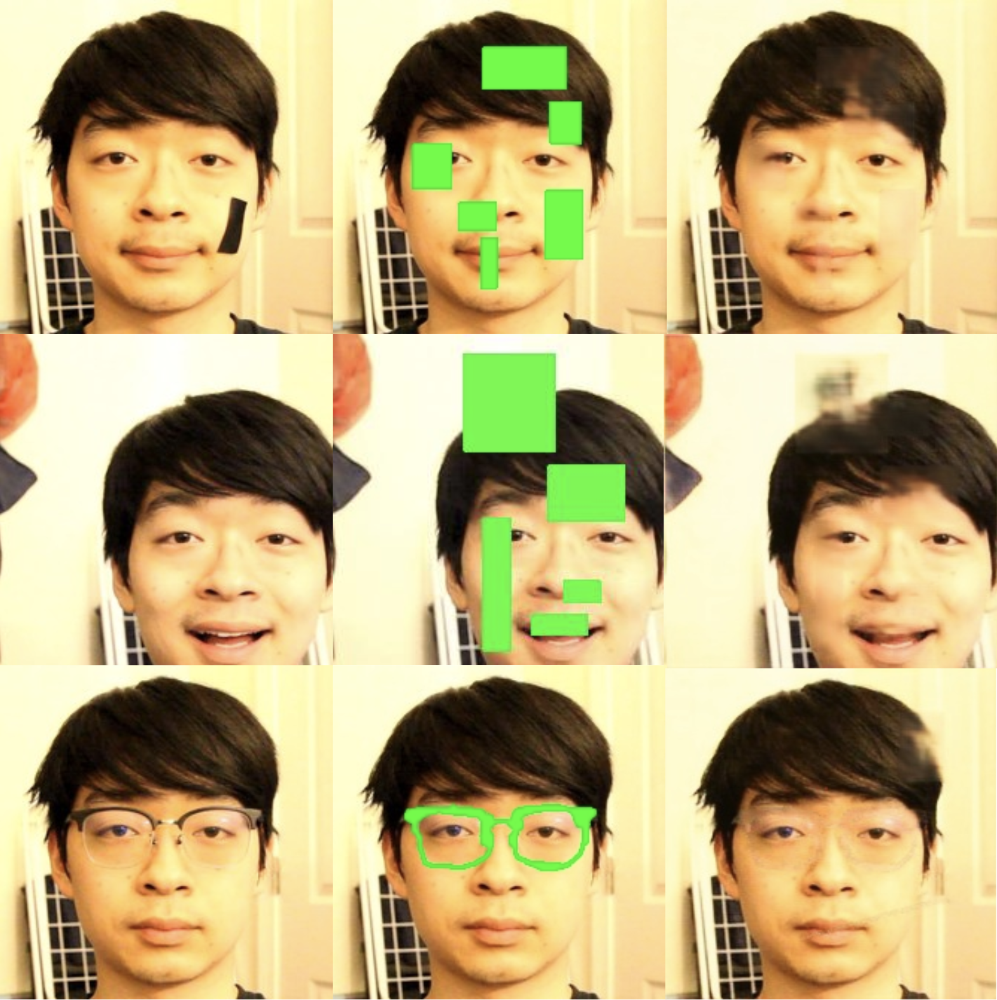

Tries to minimize the error between the output image and the original input image.
By forcing AEs to compress and reconstruct, it learns how to best:
Encode an efficient representation of the input at the code layer.
Reconstruct the input using what’s left in the code layer.
Since data must be lost through compression, low-level information is discarded and the output is blurrier than the original.

Results using a convolutional autoencoder trained on other images of my face. (left) Original photos, (middle) corrupted photos fed into autoencoder, (right) output from autoencoder. Outputs are blurrier than inputs, but the autoencoder has learned to fill in missing features based on neighboring context.
Convolutional Autoencoders Using Residual Networks
Residual Network (ResNet): employs skip connections to directly channel a layer’s output farther down the network.
Reintroduces low-level features as the image grows back into the original size during reconstruction.

Results using a residual autoencoder. Outputs are sharper than those of the plain convolutional autoencoder. Since the skip connections can only channel the low-level features that are present in the source layer, it cannot relay information about features lost from corruption. Therefore, reconstructed features still appear blurry
Variational Convolutional Autoencoders
AEs don’t generate images without being fed a similar image.
What if we want to use just the decoder half to transform some compressed representation into an image?
A regular AE’s encoder learns some unique encoding function that is not easy to understand or exploit.
The only way to generate meaningful encodings to give the decoder would be to pass an image through the encoder.
Design encoder to output two values, σ and μ.
Sample the Gaussian distribution parametrized by them.
Try to get σ and μ to be as close to the unit Gaussian as possible.
Use KL-divergence metric in addition to reconstruction error as our loss function to minimize.
KL-divergence penalty encourages our encodings to follow a continuous unit Gaussian distribution.
Reconstruction error penalty encourages similar images to output similar encodings.
By balancing these two losses functions, the encoder learns how to develop encodings for different images that still fall into the same Gaussian distribution.
Dimensionality of σ and μ not necessarily univariate, can be large (>20).
Random sampling happens only during training; during testing, the mean (μ) is used as the sample.
Sets of images generated using only two images, a target and a source. First, the encoder half of the VAE was used to generate encodings of both the source and the target, which are outputted as vectors. Then, we calculate vectors that are evenly spaced between the source and target vectors, and feed them into the decoder to obtain the intermediate images shown in the animations above.